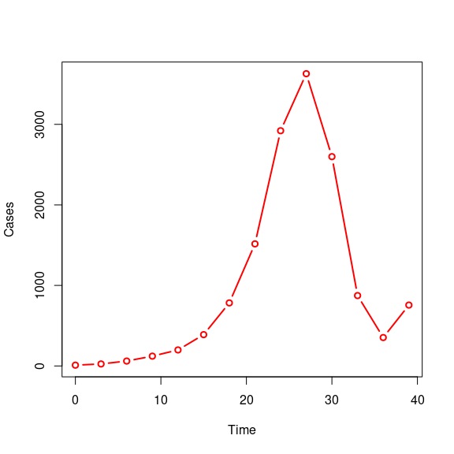

Getting started with epichains
James M. Azam and Sebastian Funk
Source:vignettes/epichains.Rmd
epichains.Rmdepichains provides methods to analyse and simulate the size and length of branching processes with an arbitrary offspring distribution. These can be used, for example, to analyse the distribution of chain sizes or length of infectious disease outbreaks, as discussed in Farrington, Kanaan, and Gay (2003) and Blumberg and Lloyd-Smith (2013).
Code
Chain likelihoods
likelihood()
This function calculates the likelihood/loglikelihood of observing a vector of outbreak summaries obtained from transmission chains. “Outbreak summaries” here refer to transmission chain sizes or lengths/durations.
likelihood() requires a vector of chain summaries (sizes or lengths),
chains, the corresponding statistic to calculate, statistic, the offspring
distribution, offspring_dist and its associated parameters. offspring_dist
is specified as the “base name” of the inbuilt distributions in R, for example,
“pois”, “nbinom”, etc. likelihood() also requires nsim_obs, which is the
number of simulations to run if the likelihoods do not have a closed-form
solution and must be simulated. This argument will be explained further in
the next section.
By default, the result is a log-likelihood but if log = FALSE, then
likelihoods are returned.
Let’s look at the following example where we estimate the log-likelihood of
observing chain_sizes.
Code
Code
# estimate loglikelihood of the observed chain sizes
likelihood_eg <- likelihood(
chains = chain_sizes,
statistic = "size",
offspring_dist = "pois",
nsim_obs = 100,
lambda = 0.5
)
# Print the estimate
likelihood_eg
#> [1] -67.82879Joint and individual log-likelihoods
likelihood(), by default, returns the joint log-likelihood. If instead,
the individual log-likelihoods are required, then the individual argument
must be set to TRUE. To return likelihoods instead, set log = FALSE.
Code
Code
# estimate loglikelihood of the observed chain sizes
likelihood_ind_eg <- likelihood(
chains = chain_sizes,
statistic = "size",
offspring_dist = "pois",
nsim_obs = 100,
lambda = 0.5,
individual = TRUE
)
# Print the estimate
likelihood_ind_eg
#> [[1]]
#> [1] -3.098612 -4.508584 -3.098612 -5.269208 -0.500000 -2.480829 -4.508584
#> [8] -3.622329 -0.500000 -4.900542 -5.619471 -1.693147 -0.500000 -1.693147
#> [15] -3.098612 -3.622329 -5.619471 -4.086190 -4.900542 -4.508584How likelihood() works
epichains ships with functions for the analytical solutions of some
transmission chain “size” and “length” distributions. For the size
distributions, we provide the poisson, negative binomial, and gamma-borel
mixture. For the length distribution, we provide the poisson and geometric
distributions. These can be used with likelihood() based on what is specified
for offspring_dist and statistic.
If an analytical solution does not exist, we provide offspring_ll(), which
uses simulations to approximate the probability distributions
(using a linear approximation to the cumulative
distribution
for unobserved sizes/lengths). In this case, an extra argument nsim_offspring
must be passed to likelihood() to specify the number of simulations to be
used for this approximation.
For example, let’s look at an example where chain_sizes is observed and we
want to calculate the likelihood of this being drawn from a binomial
distribution with probability prob = 0.9.
Code
set.seed(121)
# example of observed chain sizes; randomly generate 20 chains of size 1 to 10
chain_sizes <- sample(1:10, 20, replace = TRUE)
# get their likelihood
liks <- likelihood(
chains = chain_sizes,
offspring_dist = "binom",
statistic = "size",
size = 1,
prob = 0.9,
nsim_offspring = 250
)
liks
#> [1] -56.76805Observation probability
likelihood() uses the argument obs_prob to model the observation
probability.
By default, it assumes perfect observation, where obs_prob = 1
(See ?likelihood), meaning that all transmission events are observed and
recorded in the data.
If observations are imperfect, the obs_prob must be
less than 1. In the case of imperfect observation, “true” chain sizes
or lengths are simulated nsim_obs times, and the likelihood calculated for
each of the simulations.
For example, if the probability of observing each case is obs_prob = 0.30,
we use
Code
set.seed(121)
# example of observed chain sizes; randomly generate 20 chains of size 1 to 10
chain_sizes <- sample(1:10, 20, replace = TRUE)
# get their likelihood
liks <- likelihood(
chains = chain_sizes,
statistic = "size",
offspring_dist = "pois",
obs_prob = 0.3,
lambda = 0.5,
nsim_obs = 10
)
liks
#> [1] -183.8670 -162.1382 -166.6720 -170.1077 -152.9557 -157.9814 -166.0587
#> [8] -174.8488 -156.4197 -160.0229This returns 10 likelihood values (because nsim_obs = 10), which can be
averaged to come up with an overall likelihood estimate.
To find out about the usage of the likelihood() function, you can run
?likelihood to access its R help file.
Chain simulation
There are three simulation functions, herein referred to collectively as the simulate_*() functions.
simulate_tree()
simulate_tree() simulates an outbreak from a given number of infections.
It retains and returns information on infectors (ancestors), infectees, the generation of infection, and the time, if a generation time function is specified.
Let’s look at an example where we simulate the transmission trees of \(10\) initial infections/chains. We assume a poisson offspring distribution with mean, \(\text{lambda} = 0.9\), and a generation time of \(3\) days:
Code
set.seed(123)
# Define generation time
generation_time_fn <- function(n) {
gt <- rep(3, n)
return(gt)
}
sim_tree_eg <- simulate_tree(
ntrees = 10,
statistic = "size",
offspring_dist = "pois",
stat_max = 10,
generation_time = generation_time_fn,
lambda = 0.9
)
head(sim_tree_eg)
#> < tree head (from first known infector) >
#> infectee_id sim_id infector_id generation time
#> 11 2 2 1 2 3
#> 12 3 2 1 2 3
#> 13 4 2 1 2 3
#> 14 5 2 1 2 3
#> 15 7 2 1 2 3
#> 16 8 2 1 2 3
simulate_summary()
simulate_summary() is basically simulate_tree() except that it does not retain
information on each infector and infectee. It returns the eventual size or length/duration of each transmission chain.
Here is an example to simulate the previous examples without intervention, returning the size of each of the \(10\) chains. It assumes a poisson offspring distribution with mean of \(0.9\).
Code
set.seed(123)
simulate_summary_eg <- simulate_summary(
ntrees = 10,
statistic = "size",
offspring_dist = "pois",
stat_max = 10,
lambda = 0.9
)
# Print the results
simulate_summary_eg
#> `epichains` object
#>
#> [1] 1 Inf 4 4 Inf 1 2 Inf 5 3
#>
#> Simulated chain sizes:
#>
#> Max: 5
#> Min: 1
simulate_tree_from_pop()
simulate_tree_from_pop() simulates outbreaks based on a specified population size and pre-existing immunity until the susceptible pool runs out.
Here is a quick example where we simulate an outbreak in a population of size \(1000\). We assume individuals have a poisson offspring distribution with mean, \(\text{lambda} = 1\), and fixed generation time of \(3\):
Code
set.seed(7)
# Define generation time
generation_time_fn <- function(n) {
gt <- rep(3, n)
return(gt)
}
sim_tree_from_pop_eg <- simulate_tree_from_pop(
pop = 1000,
offspring_dist = "pois",
lambda = 1,
generation_time = generation_time_fn
)
head(sim_tree_from_pop_eg)
#> < tree head (from first known infector) >
#> sim_id infector_id generation time
#> 2 2 1 2 3
#> 3 3 1 2 3
#> 4 4 1 2 3
#> 5 5 1 2 3
#> 6 6 2 3 6
#> 7 7 6 4 9Other functionalities
Summarising
You can run summary() on <epichains> objects to get useful summaries.
Code
# Example with simulate_tree()
set.seed(123)
# Define generation time
generation_time_fn <- function(n) {
gt <- rep(3, n)
return(gt)
}
sim_tree_eg <- simulate_tree(
ntrees = 10,
statistic = "size",
offspring_dist = "pois",
stat_max = 10,
generation_time = generation_time_fn,
lambda = 0.9
)
summary(sim_tree_eg)
#> $chains_run
#> [1] 10
#>
#> $max_time
#> [1] 12
#>
#> $unique_infectors
#> [1] 9
#>
#> $max_generation
#> [1] 5
# Example with simulate_summary()
set.seed(123)
simulate_summary_eg <- simulate_summary(
ntrees = 10,
statistic = "size",
offspring_dist = "pois",
stat_max = 10,
lambda = 0.9
)
# Get summaries
summary(simulate_summary_eg)
#> $chains_run
#> [1] 10
#>
#> $max_chain_stat
#> [1] 5
#>
#> $min_chain_stat
#> [1] 1Aggregating
You can aggregate <epichains> objects returned by the simulate_*() functions into a time series, which is a <data.frame> with columns “cases” and either “generation” or “time”, depending on the value of grouping_var.
To aggregate over “time”, you must have specified a generation time distribution in the simulation step.
Code
# Example with simulate_tree()
set.seed(123)
# Define generation time
generation_time_fn <- function(n) {
gt <- rep(3, n)
return(gt)
}
sim_tree_eg <- simulate_tree(
ntrees = 10,
statistic = "size",
offspring_dist = "pois",
stat_max = 10,
generation_time = generation_time_fn,
lambda = 0.9
)
aggregate(sim_tree_eg, grouping_var = "time")
#> time cases
#> 1 0 10
#> 2 3 13
#> 3 6 15
#> 4 9 18
#> 5 12 2Plotting
Aggregated <epichains> objects can easily be plotted using base R or ggplot2 with little to no data manipulation.
Here is an end-to-end example from simulation through aggregation to plotting.
Code
# Run simulation with simulate_tree()
set.seed(123)
# Define generation time
generation_time_fn <- function(n) {
gt <- rep(3, n)
return(gt)
}
sim_tree_eg <- simulate_tree(
ntrees = 10,
statistic = "size",
offspring_dist = "pois",
stat_max = 10,
generation_time = generation_time_fn,
lambda = 0.9
)
# Aggregate cases over time
sim_aggreg <- aggregate(sim_tree_eg, grouping_var = "time")
# Plot cases over time
plot(sim_aggreg, type = "b")